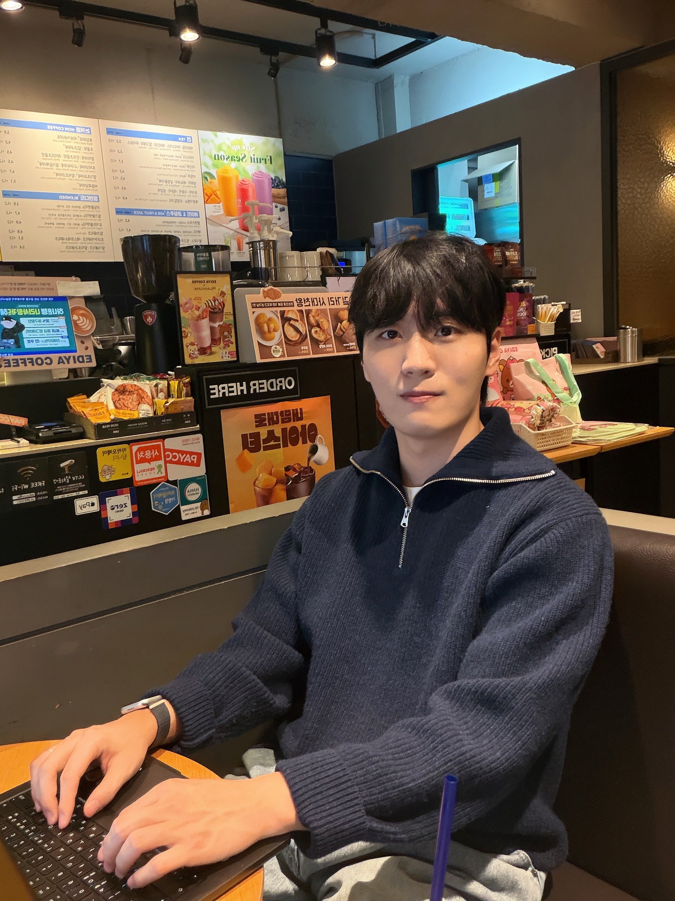

HiMatGen explores hierarchical collective reasoning for materials design.
Researcher · Seoul National University
Hi, I am
Jaehwan Choi.
I study multi-agent systems
for materials discovery.
I am an integrated M.S.–Ph.D. student in Chemical and Biological Engineering at Seoul National University, advised by Professor Yousung Jung.
After three years of experimental research on colloidal quantum-dot optoelectronics at Korea University, I now work on connecting computational design with materials that can be synthesized and tested.

01 / BackgroundA research
A research
journey.
From experimental materials research to AI systems for discovery.
On LinkedIn ↗Education & experience
2018 — present- Fall 2024 — present
Seoul National University
Integrated M.S.–Ph.D. · Chemical and Biological Engineering
Advised by Professor Yousung Jung at MICC. My current work focuses on multi-agent reasoning, synthesis-aware materials design, and the use of chemical knowledge in AI.
Research group ↗ - 2018 — 2024
Korea University
B.S. · Chemical and Biological Engineering
Graduated as department valedictorian.
Three years of experimental researchColloidal quantum-dot optoelectronics
I worked on quantum-dot materials and optoelectronic devices at Korea University, with publications on surface chemistry, hybrid nanocrystal inks, and broadband photodetection. This experience shaped my interest in the gap between a promising materials design and its realization in the lab.
Related publications, 2023–2024 ↓
Research milestones
2025 — 2026CRISP turns chemical knowledge into executable descriptors. Our review of AI for materials discovery also appeared in Chemical Reviews.
Materealize introduces a multi-agent deliberation system for materials design and synthesis. SynCry was featured in SNU Research Highlights.
Co-first-authored Synthesis-Aware Materials Redesign via Large Language Models in JACS, connecting materials redesign with synthesizability.
02 / ResearchReasoning
Reasoning
with chemistry.
My experimental background keeps a practical question in view: can a proposed material be made and tested?
Multi-agent materials discovery
How can language-model agents reason together, combine different perspectives, and use scientific tools to design materials?
Design with synthesis in mind
Bringing synthesizability into the design process, so that computational proposals are connected to plausible experimental pathways.
Chemical knowledge as code
Translating chemical ideas into executable descriptors for materials prediction, with representations that can be inspected and understood.
03 / RecognitionHonors &
Honors &
scholarships.
Yulchon AI Young Researcher Scholarship
Yulchon Foundation · Seoul National University AI Institute
KRW 8,000,000
Department Valedictorian
Chemical and Biological Engineering · Korea University
Kwanjeong Foundation Scholarship
KRW 24,000,000 awarded over two years
Samsung Humantech Paper Award
Silver Prize · KRW 5,000,000
04 / ExchangeTalks &
Talks &
presentations.
HiMatGen: Scaling LLM Agents for Materials Design through Hierarchical Collective Reasoning
Samsung Advanced Institute of Technology (SAIT)
Materealize: a multi-agent debate system for materials design
AI4X–Accelerate Conference 2026
Singapore
SynCry: Synthesis-Aware Materials Redesign via Large Language Models
Accelerate Conference 2025
Toronto, Canada
SynCry: Synthesis-Aware Materials Redesign via Large Language Models
Korean Chemical Society (KCS)
More talks & presentations
Titles, venues, and dates to be added.
05 / Publications
Google Scholar ↗Papers & preprints11
A complete record, from quantum-dot optoelectronics to AI for materials discovery.
2026
6 worksPreprint · Agentic materials design
Scaling LLM Agents for Materials Design through Hierarchical Collective Reasoning
arXiv:2609.16466
Paper ↗Preprint · Solid-state batteries
Pressure-regulated mechanochemistry at lithium metal-sulfide electrolyte interfaces
arXiv:2609.01088
Paper ↗Preprint · Materials prediction
Compiling Chemical Knowledge into Executable Descriptors for Materials Prediction
arXiv:2608.27587
Paper ↗Review · Materials discovery
AI for Accelerated Materials Discovery: From Generative Design to Autonomous Realization
Chemical Reviews 126, 8644–8693IF 64.2 ↗
Paper ↗Journal article · Synthesizability
Enhancing Generalization in Synthesizability Prediction of Structurally Dissimilar Materials
Journal of Chemical Information and Modeling 66, 8102–8109IF 6.4 ↗
Paper ↗Preprint · Multi-agent systems
Materealize: a multi-agent deliberation system for end-to-end material design and synthesis
arXiv:2601.15743 · * Equal contribution
Paper ↗2025
1 workJournal article · Inorganic materials
Synthesis-Aware Materials Redesign via Large Language Models
Journal of the American Chemical Society 147, 39113–39122 · * Equal contributionIF 16.6 ↗
Paper ↗Code ↗2024
2 worksJournal article · Optoelectronics
Thiol-Free p-Type Colloidal Quantum Dot for Efficient Broadband Optoelectronics
International Journal of Energy Research 2024, 5525410 · * Equal contributionIF 4.2 ↗
Paper ↗Journal article · Optoelectronics
P-Type Colloidal InSb Quantum Dot Ink Enables III–V Group Bulk-Heterojunction Shortwave Infrared (SWIR) Photodetector
Advanced Optical Materials 12, 2303097IF 7.2 ↗
Paper ↗2023
2 worksJournal article · Optoelectronics
Sulfurized Colloidal Quantum Dot/Tungsten Disulfide Multi-Dimensional Heterojunction for an Efficient Self-Powered Visible-to-SWIR Photodetector
Advanced Functional Materials 33, 2303778IF 19.9 ↗
Paper ↗Journal article · Optoelectronics
Surface tailoring enables colloidal quantum dot: Metal-oxide nanocrystal hybrid ink for broadband photon energy conversion
Applied Surface Science 612, 155804IF 6.6 ↗
Paper ↗Journal impact factors (IF) are publisher-listed values checked in September 2026. They describe journals, not individual papers. Preprints have no journal impact factor. * Equal contribution.